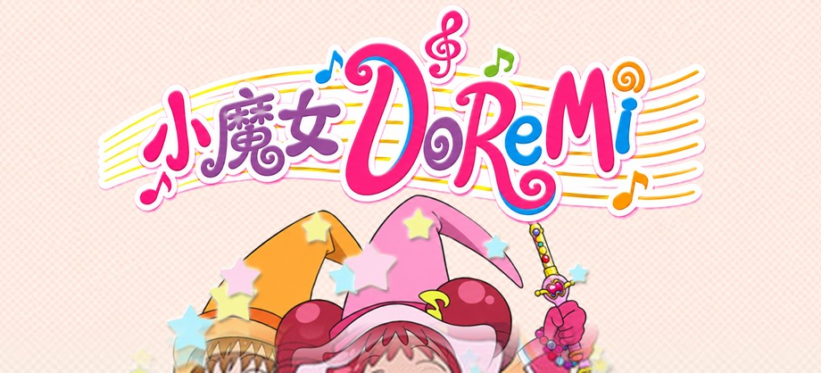

★ 东映动画 · 小魔女DoReMi 官方中文门户
Ren'Py 8 移植版 v1.0.0
GitHub
简体中文
日本語
作品首页
故事梗概
人物介绍
各集介绍
制作人员
片头·片尾曲
游戏下载
实机截图

★ 《小魔女DoReMi冒险 ～「秘密的魔法」～》 Ren'Py 8 跨平台移植版（v1.0.0）
完整下载说明 »
｜
查看 8 张实机截图 »
原作移植
おジャ魔女あどべんちゃ～「ないしょのまほう」
（将 KiriKiri2 视觉小说移植至 Ren'Py 8，免安装环境点击即玩）
语言支持
支持
日语原版 / 简体中文
实时切换（含菜单、剧本、UI 按钮及序章中文 Logo），内置等幅 / 比例字体切换。
立即下载
Windows (.zip)
Linux x64/ARM64
macOS Universal
Android (.apk)
Web / WASM (.zip)
运行指南 »
© ABC・東映アニメーション / AMADA PRINTING MFG. CO., LTD. ｜
小魔女DoReMi冒险 ～「秘密的魔法」～ Ren'Py 8 移植版
×
‹
›